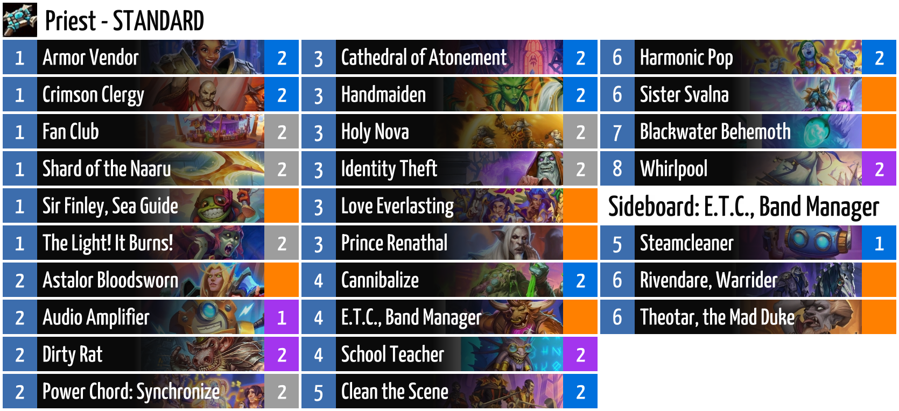

Here is the main workspace repo, and the CLI.
Here is the Discord Bot repo, where info about using the bot can be found.

I have been playing Hearthstone almost every day for the better part of a decade, since the release of Journey of Un'Goro in 2017, and I have been participating in various communities for the game on Discord and Reddit. Almost all the tools in these communities that help players look up the cards are based on an unofficial third party API, even though Blizzard does have their own. So I always imagined that there should be one based on Blizzard's API.
So, looking for a project to learn Rust with, I decided to try and build the Hearthstone Bot I always wanted, that looks up the data directly from Blizzard. I mostly succeeded, and I only fall on third party API for some odd omissions in Blizzard's own (like some card thumbnails) and meta game data (which is not provided by Blizzard at all.)
During the development of this project, I learned a lot about Rust and its surrounding ecosystem: clap, serde, serenity, image, nom. I learned about HTTP and GET and POST. I learned about hosting my bot on shuttle.rs. I implemented font fallback to localize the app and deck images (not that anybody actually uses the localization, but it is there.) For a brief while I had a straight-up type setter to set card text into images, though I eventually dropped that because the fonts took too much server space.
My favorite thing about the project, personally, is the deck images. I had so much fun with them. They look very nice in all cases with no human intervention whatsoever. The CLI app has tool to patch produce the images for some content creator's Twitter or something.
The Discord bot is, at the time of this writing, installed on 33 Discord servers. Chief among them is the Competitive Hearthstone Discord Server, where I hang out and gather ideas on how to improve the bot;